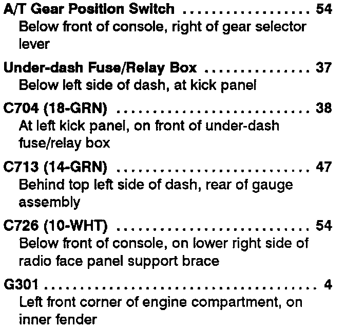

Operation CHARM
: Car repair manuals for everyone.
Home
>>
Acura
>>
1993
>>
Integra L4-1678cc 1.7L DOHC (VTEC) FI
>>
Repair and Diagnosis
>>
Engine, Cooling and Exhaust
>>
Engine
>>
Engine Lubrication
>>
Oil Pressure Warning Lamp/Indicator
>>
Diagrams
>>
Diagram Information and Instructions
>>
Locations and Photographs
>>
Component Location Index
>>
A/T Gear Position Indicator
A/T Gear Position Indicator
Automatic Transmission Gear Position Indicator Circuit Operation:
